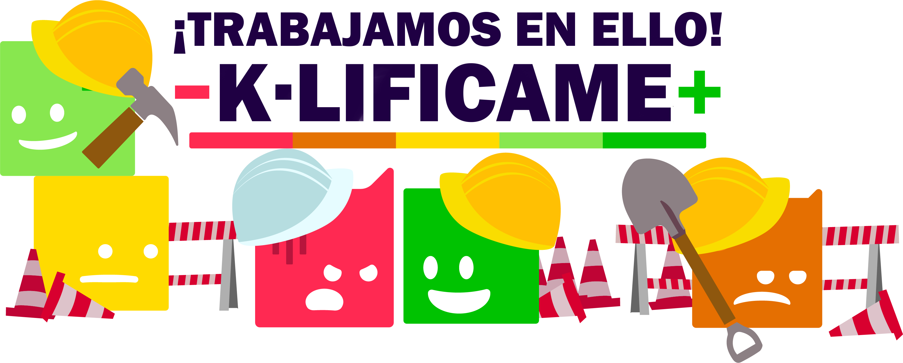

Actualmente estamos realizando mantenimiento
Hola,
En K-LIFICAME, nos esforzamos por ofrecerte la mejor experiencia posible. Para lograrlo, periódicamente necesitamos llevar a cabo tareas de mantenimiento y actualizaciones en nuestra plataforma.
En este momento, esta sección está temporalmente fuera de servicio mientras implementamos mejoras importantes.
¿Qué significa esto para ti?
- No podrás realizar ninguna operación en esta sección de la plataforma hasta que finalice el mantenimiento.
- Estamos trabajando para terminar lo antes posible y volver a estar operativos en breve.
- Tus datos están seguros y protegidos; ninguna información se verá afectada durante este proceso.
¡Gracias por tu comprensión y por ser parte de K-LIFICAME!
